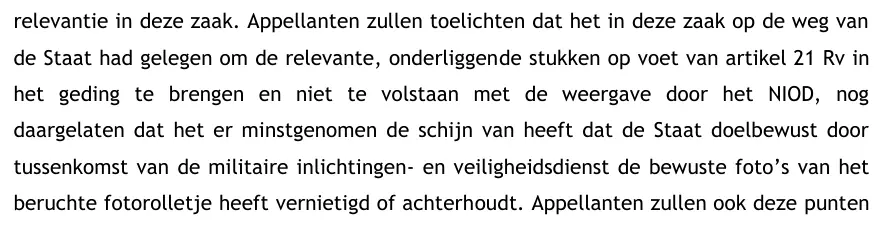
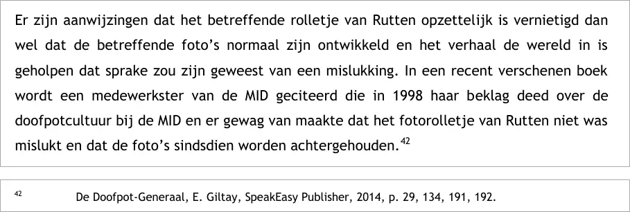

Bewijsstuk · Processtuk
Moeders van Srebrenica, memorie van grieven, 7 juli 2015
Het essay haalt uit deze memorie van grieven twee passages aan, de stemmensectie alleen de tweede. Beide staan hieronder in de volgorde van het stuk.
Randnummer 18 · De schijn dat de Staat de foto’s heeft vernietigd of achterhoudt
“Appellanten zullen toelichten dat het in deze zaak op de weg van de Staat had gelegen om de relevante, onderliggende stukken op voet van artikel 21 Rv in het geding te brengen en niet te volstaan met de weergave door het NIOD, nog daargelaten dat het er minstgenomen de schijn van heeft dat de Staat doelbewust door tussenkomst van de militaire inlichtingen- en veiligheidsdienst de bewuste foto’s van het beruchte fotorolletje heeft vernietigd of achterhoudt.” Pagina 14, de voorlaatste zin van randnummer 18, over de stukken die de Staat volgens appellanten in het geding had moeten brengen.

Randnummer 31 · Het boek als bron over het fotorolletje
“Er zijn aanwijzingen dat het betreffende rolletje van Rutten opzettelijk is vernietigd dan wel dat de betreffende foto’s normaal zijn ontwikkeld en het verhaal de wereld in is geholpen dat sprake zou zijn geweest van een mislukking. In een recent verschenen boek wordt een medewerkster van de MID geciteerd die in 1998 haar beklag deed over de doofpotcultuur bij de MID en er gewag van maakte dat het fotorolletje van Rutten niet was mislukt en dat de foto’s sindsdien worden achtergehouden.” Pagina 23, grief 1, randnummer 31. Noot 42 bij deze alinea luidt: ‘De Doofpot-Generaal, E. Giltay, SpeakEasy Publisher, 2014, p. 29, 134, 191, 192.’ Het processtuk spelt de titel met een koppelteken en een hoofdletter G.

Waarom dit document telt
In juli 2015 haalden de Moeders van Srebrenica De doofpotgeneraal aan in hun hoger beroep tegen de Nederlandse Staat, in de passage over de vernietiging van foto- en videomateriaal. Hun advocaten verwezen naar vier pagina’s uit de eerste druk van het boek, waarin MID-medewerkster Barbara Overduyn wordt geciteerd met de mededeling dat het fotorolletje van Rutten niet was mislukt en dat de foto’s sindsdien worden achtergehouden. Zij voerden het aan als aanwijzing dat het rolletje van Rutten opzettelijk is vernietigd, of dat de foto’s gewoon zijn ontwikkeld en het verhaal van een mislukking de wereld in is geholpen.
Herkomst
- Document
- Memorie van grieven, 330 pagina’s
- Instantie
- Gerechtshof Den Haag
- Zaaknummer
- 200.160.317/01
- Auteur
- Marco Gerritsen en Simon van der Sluijs, advocaten van appellanten
- Datum
- 7 juli 2015 (roldatum)
- Onderwerp
- Hoger beroep van de Moeders van Srebrenica en tien nabestaanden tegen de Staat der Nederlanden, gericht tegen het vonnis van de Rechtbank Den Haag van 16 juli 2014
- Passage
- Grief 1, randnummer 18, pagina 14, en randnummer 31, pagina 23
- Verwijzingen
- De Doofpot-Generaal, E. Giltay, SpeakEasy Publisher, 2014, pp. 29, 134, 191 en 192 (noot 42)
- Taal
- Nederlands
- Berust bij
- Als pdf gepubliceerd op vandiepen.com
- Archiefkopie
- Wayback Machine, 27 september 2026
Aangehaald in:
- het essay ‘Het verbod viel, het boek bleef overeind’ in de hoofdstukken (3) ‘Wat het boek onthult: de Srebrenica-doofpot’, (5) ‘Meer dan een verboden boek’ en (11) ‘Beëindig het zwijgen voor Srebrenica’
- de stemmensectie.
Document: https://
Archiefkopie: https://
Geraadpleegd 9 oktober 2026.

Deze pagina is een bewijsstuk bij het boek De doofpotgeneraal van Edwin Giltay en de bijbehorende website.